3 - 5 May 2018 | Wesleyan University
Rhinoceros
Sound Designer, Engineer, & Composer
Presented by Second Stage at Wesleyan University as Jordan Tragash's final project.
Currently in production!
1 - 3 March 2018 | Wesleyan University
99 Histories
Sound Designer, Engineer, & Composer
Presented by the Theater Department at Wesleyan University as Yichen Eva Lou's senior directing thesis.
Currently in production!
7 December 2017 | Wesleyan University
Turn It Up a Little Louder
Sound Designer
Presented by the Music Department at Wesleyan University as part of John Cage's Musicircus. Created as partial fulfillment for the final of MUSC 109: Introduction to Experimental Music, instructed by Prof. Paula Matthusen. Poster by Gabriel Drozdov (me!).
For my contribution to the Fall 2017 production of Musicircus, I created a piece inspired by Alvin Lucier's "I am sitting in a room" in which I recorded the noise in the room and played it back into the room, repeating the recording process as I went along. I simultaneously played back all prior recordings, dynamically limiting and compressing the audio so that the piece's dynamic range decreased over time but maximum amplitude remained the same, resulting in an increase in the apparent loudness of the piece without actually changing its loudness.

Listen to an example of the performance.
Read my essay on the performance.
16 - 18 November 2017 | Wesleyan University
The Pillowman
Asst. Sound Designer
Presented by the Theater Department at Wesleyan University as the Fall 2017 faculty production. Directed by Eddie Torres. Poster by Gabriel Drozdov (me!). Photos taken by Sige Zheng.
I was the assistant sound designer under Anthony Dean. I assembled sound effects for the "story" scenes, which Anthony would then process to create atmospheric textures. Our production of The Pillowman featured three rap breaks featuring original pieces by Wesleyan students, and I worked with the rappers in our campus recording studio to produce versions of their tracks as well as help them rehearse for the final performance. Additionally, I was present for the entirety of tech week to assist in final touches to sound effects and provide creative feedback on the production's sound design as a whole.
 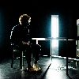
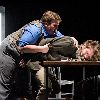The Pillowman is an extremely violent play, and we had a subtle music fade out before any violence happened to create a void in the space that the audience could feel.">
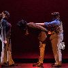
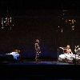
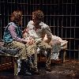
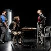
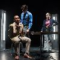
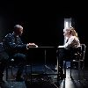
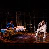
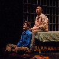
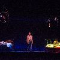
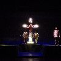
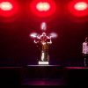
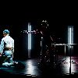
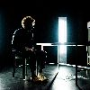
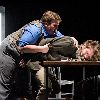The Pillowman is an extremely violent play, and we had a subtle music fade out before any violence happened to create a void in the space that the audience could feel.">
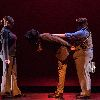
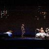
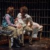
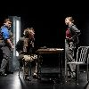
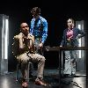
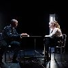
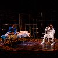
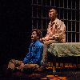
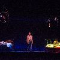
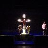
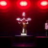
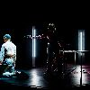
Listen to Kyle's rap.
Listen to Qiyuan's rap.
Listen to Laszlo's rap.
9 - 11 November 2017 | Wesleyan University
Little Shop of Horrors
Sound Designer, Engineer, & SBO
Presented by Second Stage at Wesleyan University. Directed by Sophie Brett-Chin. Photos taken by Ginger Hollander.
Our production of Little Shop did not feature any sound effects. Instead, we prioritized mic-ing as many of the actors as possible under budgetary and technological restrictions. In total, I managed four wireless lapel microphones, three wireless handhelds, and one wired handheld. I did not have access to a digital soundboard, so the mics were EQ-ed and organized via an analog board. During the performances, I kept a script on me and adjusted levels as well as which mics were on based on my own understanding of the show, since the stage manager was not able to call any sound cues for me. I also managed monitor feedback for the pit, and I wired an electric drumset through the board so that the band and cast could keep time.
18 May 2017 | Wesleyan University
An Intervention
Sound Designer
Presented by the Theater Department at Wesleyan University as Jess Wolinsky's Directing II final presentation. Sound design completed as fulfillment for the final of THEA 420: Sound Design as Component Media, instructed by Anthony Dean. Photo taken by Jess Wolinsky.
Jess' production of An Intervention was an abridged version of the play, which meant I had fewer explicit sound effects to construct but more room to experiment. The performed scenes included four asides, with two by each of the actors. To differentiate these moments, I created transition effects and character-specific atmospheric textures that grew more demented with each subsequent aside. Additionally, the play featured scene transitions of significant length, and I matched the play's darker tone with several pieces from Oneohtrix Point Never's 2011 album Replica and finally a movement from Steve Reich's Music for 18 Musicians.
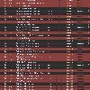 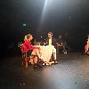
7 - 9 March 2017 | Wesleyan University
Mnemonic
Sound Designer
Presented by the Theater Department at Wesleyan University as Ali Jamali's senior directing thesis. Originally produced by British theater company Complicite in 1999. Poster designed by Jonah Toussaint. Photos taken by Sonya Sternlieb and Cybele Moon.
Mnemonic features numerous technical elements in all facets of design. I entered the project later than the other designers and had to adapt to numerous decisions made before my arrival. Thus, a large portion of my role as sound designer consisted of running down an extensive checklist of necessary sound cues and voice-overs, after which I was able to make more creative decisions such as designing sonic atmospheres and motifs to subtly influence the audience's perception of certain scenes.
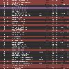 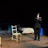 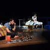Mnemonic features few scenes of straight dialogue, since the actors are either talking through voice overs or phones."> 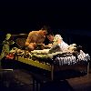 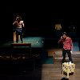 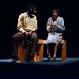 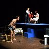 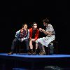 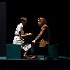 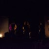 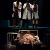 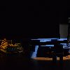